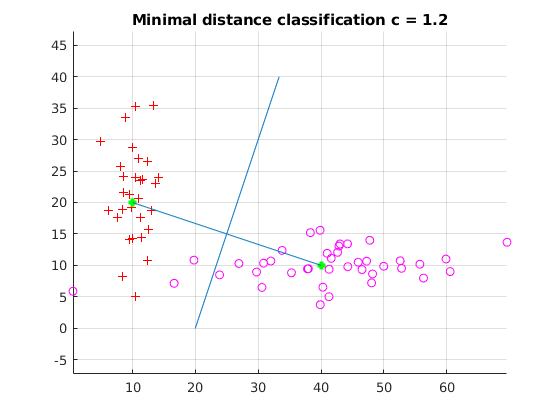
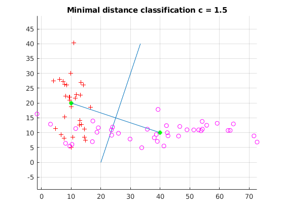
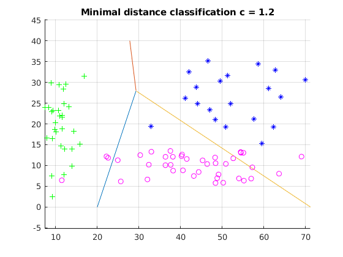
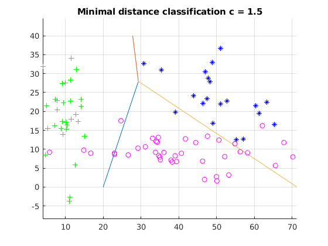
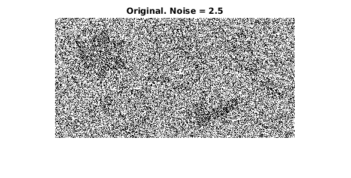
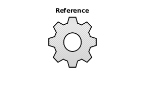
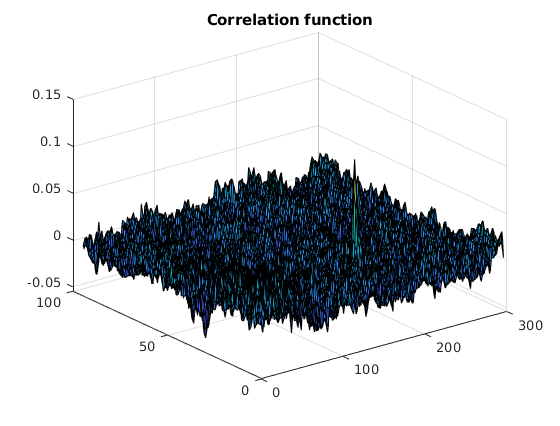
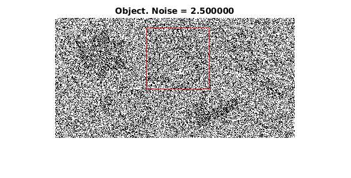

Contents
Task 1
clc; close all; clear;
N_x = 30; N_y = 40;
m_x = [10, 20]';
m_y = [40, 10]';
c = [1.2 1.5];
for k=1:2
sigma_x = c(k) * [2, 5]';
sigma_y = c(k) * [10, 2]';
X = [normrnd(m_x(1), sigma_x(1), [N_x, 1]), normrnd(m_x(2), sigma_x(2), [N_x, 1])];
Y = [normrnd(m_y(1), sigma_y(1), [N_y, 1]), normrnd(m_y(2), sigma_y(2), [N_y, 1])];
f = @(x, m_i, m_j)x' * (m_i - m_j) - 1/2 * (m_i - m_j)' * (m_i + m_j);
syms x_1 x_2
d_ij = @(x_2) solve(f([x_1, x_2]', m_x, m_y));
t = 0:40;
x_1 = zeros(1, length(t));
for x_2 = t
x_1(x_2+1) = d_ij(x_2);
end
figure; hold on; grid on;
plot(x_1, t);
plot(X(:,1), X(:,2), 'r+');
plot(Y(:,1), Y(:,2), 'mo');
plot(m_x(1), m_x(2),'g+', 'LineWidth',3);
plot(m_y(1), m_y(2),'g+', 'LineWidth',3);
line([m_x(1) m_y(1)], [m_x(2) m_y(2)]);
axis equal;
title(sprintf('Minimal distance classification c = %1.1f', c(k)));
errors_X = 0;
for i = 1:size(X,1)
if (f([X(i,1), X(i,2)]', m_x, m_y) < 0)
errors_X = errors_X + 1;
end
end
errors_Y = 0;
for i = 1:size(Y,1)
if (f([Y(i,1), Y(i,2)]', m_x, m_y) > 0)
errors_Y = errors_Y + 1;
end
end
fprintf('Объект класса X был отнесен к классу Y = %d\n', errors_X);
fprintf('Объект класса Y был отнесен к классу X = %d\n', errors_Y);
end
Объект класса X был отнесен к классу Y = 0
Объект класса Y был отнесен к классу X = 3
Объект класса X был отнесен к классу Y = 0
Объект класса Y был отнесен к классу X = 12
 
Task 2
clc; close all; clear;
N_x = 30; N_y = 40; N_z = 20;
m_x = [10, 20]';
m_y = [40, 10]';
m_z = [50, 25]';
c = [1.2 1.5];
for k=1:2
sigma_x = c(k) * [2, 5]';
sigma_y = c(k) * [10, 2]';
sigma_z = c(k) * [7,4]';
X = [normrnd(m_x(1), sigma_x(1),[N_x,1]),normrnd(m_x(2), sigma_x(2),[N_x,1])];
Y = [normrnd(m_y(1), sigma_y(1),[N_y,1]),normrnd(m_y(2), sigma_y(2),[N_y,1])];
Z = [normrnd(m_z(1), sigma_z(1),[N_z,1]),normrnd(m_z(2), sigma_z(2),[N_z,1])];
f = @(x, m_i, m_j)x' * (m_i - m_j) - 1/2 * (m_i - m_j)' * (m_i + m_j);
syms x_1 x_2
s = solve ((f([x_1, x_2]', m_x, m_y)), (f([x_1, x_2]', m_x, m_z)), (f([x_1, x_2]', m_y, m_z)));
solve(f([x_1, x_2]', m_x, m_y));
solve(f([x_1, x_2]', m_x, m_z));
solve(f([x_1, x_2]', m_z, m_y));
d_ij_xy = @(x_2) solve(f([x_1, x_2]', m_x, m_y));
d_ij_xz = @(x_2) solve(f([x_1, x_2]', m_x, m_z));
d_ij_yz = @(x_2) solve(f([x_1, x_2]', m_y, m_z));
t = 0:0.1:40;
x_y = zeros(1, length(t));
x_z = zeros(1, length(t));
y_z = zeros(1, length(t));
for i = 1:length(t)
x_y(i) = d_ij_xy(t(i));
x_z(i) = d_ij_xz(t(i));
y_z(i) = d_ij_yz(t(i));
end
figure; hold on; grid on; axis equal;
plot(x_y(x_y < s.x_1), t(t < s.x_2));
plot(x_z(x_z < s.x_1), t(t > s.x_2));
plot(y_z(y_z > s.x_1), t(t < s.x_2));
plot(X(:,1), X(:,2), 'g+');
plot(Y(:,1), Y(:,2), 'mo');
plot(Z(:,1), Z(:,2), 'b*');
title(sprintf('Minimal distance classification c = %1.1f', c(k)));
end
 
Task 4
clc; close all; clear;
F = im2double(rgb2gray(imread('image.png')));
W = im2double(rgb2gray(imread('ref.png')));
noise_mean = 0.0;
noise_var = 2.5;
F = imnoise(F, 'gaussian', noise_mean, noise_var);
figure; imshow(F); title(sprintf('Original. Noise = %1.1f', noise_var)); drawnow;
figure; imshow(W); title('Reference'); drawnow;
M = size(F,1);
N = size(F,2);
S = size(W, 1);
T = size(W, 2);
wst = mean(mean(W));
for x = 1:M-S
for y = 1:N-T
fst = mean(mean(F(x:x+S, y:y+T)));
sum1 = 0; sum2 = 0; sum3 = 0;
for s = 1:S
for t = 1:T
sum1 = sum1 + (F(s + x - 1, t + y - 1) - fst) * (W(s,t) - wst);
sum2 = sum2 + (F(s + x - 1, t + y - 1) - fst) ^ 2;
sum3 = sum3 + (W(s,t) - wst) ^ 2;
end
end
R(x,y) = sum1 / sqrt(sum2 * sum3);
end
end
figure; surf(R); title('Correlation function'); drawnow;
figure; imshow(F); drawnow;
[row, col] = find(R' == max(max(R)));
rectangle('Position', [row, col, S, T], 'EdgeColor', 'red');
title(sprintf('Object. Noise = %f', noise_var)); drawnow;
   